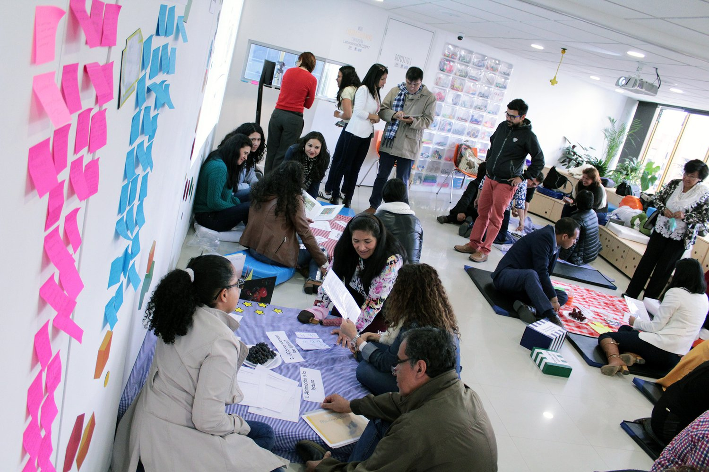
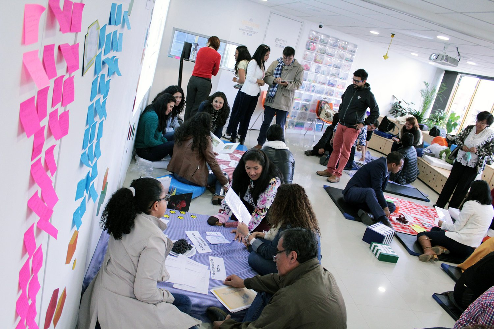

Education, one of the most fundamental human development processes has been, unfortunately, one of the few industries (if not the only one) that has undergone almost no innovation since the public schooling system became established in the late 19th century.
Given our ever changing social, political, technological and environmental contexts, education needs to adapt to the requirements and needs of the 21st century.This challenge becomes more difficult in a context like Colombia, where the education system still has many problems related to dropout rates, bad academic results, hostile learning environments, lack of teacher motivation, amongst others.
United Way Colombia's innovation team decided that it was necessary to change the tradional approach to delivering student programmes and focus on teachers because an empowered and motivated teacher can enhance hundreds or thousands of students’ lives during their careers.
The challenge was defined as “how can we develop 21st century skills in teachers so that they are able to transfer them to their students as well as solving design challenges in their institutions?”
The solution for the project came as a design lab for education. In this lab, named The Living Lab (Laboratorio Vivo in Spanish) teachers experience a professional development service that allows them to innovate with their pedagogical practices, as well as solving pressing issues in their schools.
This service (built in collaboration with multiple private and public stakeholders) works using two different, but intertwined, journeys: the skill development journey and the solution incubator journey.
Skill development journey
This journey aims to develop eight 21st century skills (as defined by the Partnership for 21st Century Skills):
- Creativity & innovation
- Communication
- Information literacy
- Collaboration
- Lifelong learning
- Critical thinking
- Technology literacy
- Problem solving
This is done through a practice-driven approach that breaks with traditional teaching styles, such as lectures and seminars and focuses more on workshops and visible learning (John Hattie, 2008). The objetive in this journey is to show teachers different points of view regarding education and challenge them to break with pervasive paradigms that currently shape Colombian education systems.
Solution incubator journey
The solution incubator journey allows teachers to experiment with a service design and design thinking approach in order to solve pressing issues from their schools. Through a series of workshops they can identify, cluster and analyze problems, as well as ideate, prototype and communicate solutions that are cost-efficient and scalable within the educator’s community. This ideas are then implemented and monitored by a mentorship service offered by the design lab thus allowing teachers to continue experimenting and generating a innovation culture in their schools.
 

Skill development journey
This journey aims to develop eight 21st century skills (as defined by the Partnership for 21st Century Skills):
- Creativity & innovation
- Communication
- Information literacy
- Collaboration
- Lifelong learning
- Critical thinking
- Technology literacy
- Problem solving
This is done through a practice-driven approach that breaks with traditional teaching styles, such as lectures and seminars and focuses more on workshops and visible learning (John Hattie, 2008). The objetive in this journey is to show teachers different points of view regarding education and challenge them to break with pervasive paradigms that currently shape Colombian education systems.
Solution incubator journey
The solution incubator journey allows teachers to experiment with a service design and design thinking approach in order to solve pressing issues from their schools. Through a series of workshops they can identify, cluster and analyze problems, as well as ideate, prototype and communicate solutions that are cost-efficient and scalable within the educator’s community. This ideas are then implemented and monitored by a mentorship service offered by the design lab thus allowing teachers to continue experimenting and generating a innovation culture in their schools.